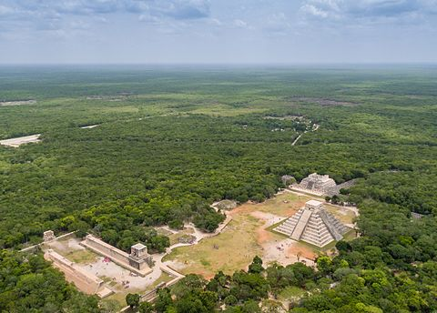
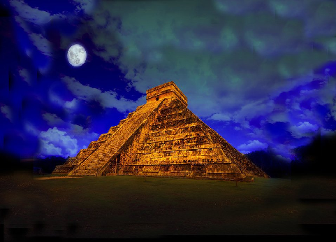

Chichén Itzá
Archaeological Site

Chichén Itzá
Ruins
Chichén Itzá (do iucateque: Chi'ch'èen Ìitsha) foi uma grande cidade pré-colombiana construída pela civilização maia no final do período clássico. O sítio arqueológico está localizado no município de Tinum, no estado de Yucatán, México.
As ruínas de Chichén Itzá são de propriedade federal e a administração do local é mantida pelo Instituto Nacional de Antropologia e História do México. A terra sob os monumentos era de propriedade privada até 29 de março de 2010, quando foi comprada pelo estado de Yucatán. Chichén Itzá é um dos sítios arqueológicos mais visitados no México; cerca de 1,4 milhões de turistas visitam as ruínas a cada ano.
Copyright by Me©